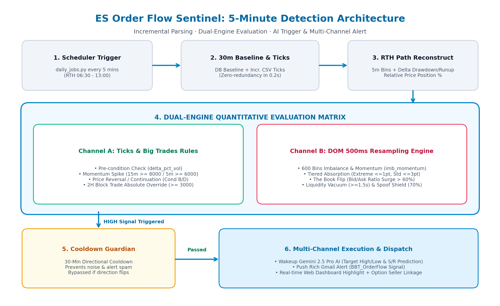
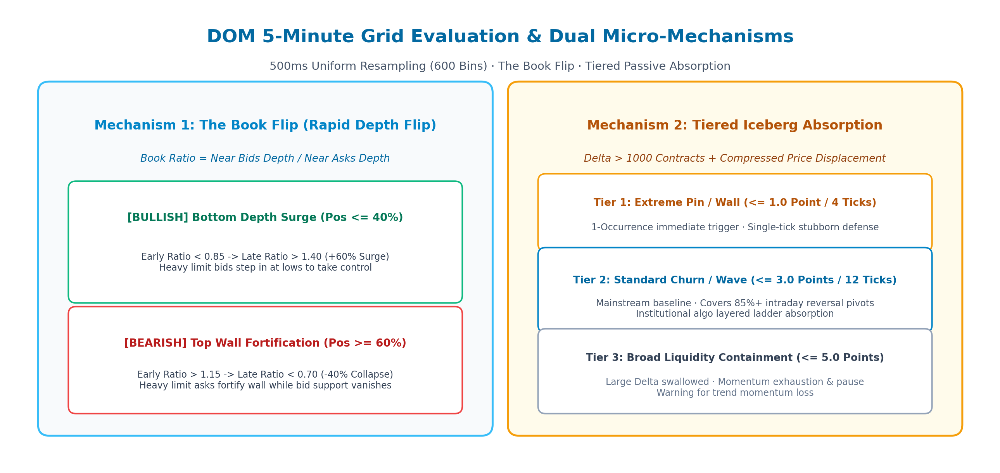

1. 系统全流程与架构拓扑
5分钟订单流哨兵是日内实盘交易系统的最前哨神经元。它在 RTH 开盘时段（06:30 至 13:00，避开 30 分钟整点边界）由 daily_jobs.py 定时唤醒，以 0.2 秒的极速完成微观盘口扫描，在确认日内顶底异动时事件驱动唤醒 AI 并触发推送。

基线锚定与增量 Tick 拼接机制
在常规日内交易中，ES 期货成交流全天可达 200,000 ~ 400,000 笔。如果每 5 分钟都从当日 00:00 重新加载全天 CSV，将导致严重磁盘 I/O 拥塞与秒级延迟。哨兵系统采用了高效的“基线锚定 + 增量拼接”架构：
- 从 MySQL
order_flow_signals倒序检索最近一次 30 分钟整点信号。 - 提取已固化的历史基线：
baseline_rth_delta与baseline_rth_volume。 - 继承上一个周期的 5m micro_intervals 历史演进路径。
- 仅扫描基线时间戳到当前时刻（5~25分钟窗口）的微量成交流（通常仅数千笔）。
- 直接信任 Native Side 列（Bid/Ask 真实主动方），计算增量 Delta 与 Volume。
- 单次解析与微观聚合耗时严格控制在 200ms 以内。
- 动态计算今日 RTH 累积 Delta 峰值与谷值。
- 计算
delta_drawdown(高位跳水回撤) 与delta_runup(底部强势反弹)。 - 计算当前相对价格在日内极值区间的位置百分比
price_position_pct。
2. 通道 A: 已成交流与大单量化决策体系
通道 A 由 order_flow_rules_optimizer.py 驱动，对过去 5m、15m、30m 的 Delta 动量及 2 小时大宗机构单进行多级过滤，确保信号既敏锐又具备极强抗噪性。
- 前置比例约束 (Pre-condition): 累积 Delta 占成交量比例 delta_pct_vol ≤ 0.015，防止在严重超买竭尽时追高。
- 条件 A (动量爆发): 最近 15 分钟 Delta ≥ 8,000 手，或单根 5 分钟 Delta ≥ 6,000 手。
- 条件 B (逆转推进): 5 分钟价格上涨 ≥ 10.0 点且伴随买方承接。
- 条件 C (底背离反弹): Delta 从当日最低点强劲反弹 delta_runup ≥ 10,000 手，或 30m 净增 > 5,000 手。
- 条件 D (持续单边): 30 分钟价格上涨 ≥ 15.0 点且 Delta 为正。
- 前置比例约束: 累积 Delta 占成交量比例 delta_pct_vol ≥ 0.015，防止在严重超卖竭尽时追空。
- 条件 A (打压爆发): 最近 15 分钟 Delta ≤ -8,000 手，或单根 5 分钟 Delta ≤ -6,000 手。
- 条件 B (击穿下行): 5 分钟价格下跌 ≤ -10.0 点且伴随卖方持续下压。
- 条件 C (顶背离跳水): Delta 从当日最高点跳水回落 delta_drawdown ≥ 10,000 手，或 30m 净流出 < -5,000 手。
- 条件 D (单边下泻): 30 分钟价格下跌 ≤ -15.0 点且 Delta 为负。
顶级机构（如 Adam Set 理论强调的暗池大宗交易）通常采用限价单被动吸收散户的恐慌抛盘。此时若仅看微观 Delta，往往显示为负数（因为是市价单砸向限价买单），容易诱导系统误判为 Bearish。为此系统设立最高覆盖法则：
当 2小时大宗净额 ≥ 3,000 手（或权重分 ≥ 1500），且价格处于日内相对低位 Pos ≤ 40%：一票否决空头判定，强制触发看多覆盖！
当 2小时大宗净额 ≤ -3,000 手（或权重分 ≤ -1500），且价格处于日内相对高位 Pos ≥ 60%：一票否决多头判定，强制触发看空覆盖！
3. 通道 B: DOM 500ms 重采样高频规则引擎
通道 B 由 dom_sentinel_evaluator.py 驱动。系统将过去 5 分钟窗口在时间轴上离散化为 600 个 500ms 均匀步长，直接监控未成交的限价挂单薄（Depth of Market）微观结构演变。

当 5 分钟 DOM 数据命中以下任意一项高确信度微观结构，且未被诱多假托单陷阱拦截时，直接将 is_dom_bull_high = True 激活看多 HIGH 信号：
- 条件 1 (卖方流动性真空逼空): 上方卖单单档挂单不足 10 手持续 vacuum_ask_sec ≥ 1.5s，且近端失衡看多（imb_near > 0.05 或动量 imb_momentum > 0.04），同时买方堆单持续加固（stack_bid ≥ stack_ask）。
-
条件 2 (底部梯级冰山死守吸筹):
价格处于日内相对中低位 (Pos ≤ 45%)，且命中：
• 极致死守: 单根 5m Bar 位移 ≤ 1.0 点 且 Delta < -800 出现 ≥ 1 次；
• 或 标准波段吸收: 位移 ≤ 3.0 点 出现 ≥ 2 次。 - 条件 3 (底部盘口大翻转 The Book Flip): 价格处于日内低位区 (Pos ≤ 40%)，前半段 2.5m 空头压制 (early_ratio < 0.85)，后半段买方猛烈增厚翻盘 (late_ratio > 1.40 且增幅超 60%)。
- 条件 4 (多头堆单防线持续筑底加固): 买方堆单 stack_bid ≥ 8 次 且达到卖方的 2 倍以上 (stack_bid ≥ 2 * stack_ask)，同时加权失衡或动量看多 (w_imb > 0.04 或 momentum > 0.04)。
当 5 分钟 DOM 数据命中以下任意一项高确信度微观结构，且未被诱空假压单陷阱拦截时，直接将 is_dom_bear_high = True 激活看空 HIGH 信号：
- 条件 1 (买方流动性断层击穿): 下方买单单档挂单不足 10 手持续 vacuum_bid_sec ≥ 1.5s，且近端失衡看空（imb_near < -0.05 或动量 imb_momentum < -0.04），同时卖方堆单持续压迫（stack_ask ≥ stack_bid）。
-
条件 2 (高位梯级冰山死守拦截):
价格处于日内相对中高位 (Pos ≥ 55%)，且命中：
• 极致死守: 单根 5m Bar 位移 ≤ 1.0 点 且 Delta > 800 出现 ≥ 1 次；
• 或 标准波段拦截: 位移 ≤ 3.0 点 出现 ≥ 2 次。 - 条件 3 (顶部盘口大翻转 The Book Flip): 价格处于日内高位区 (Pos ≥ 60%)，前半段 2.5m 多头占优 (early_ratio > 1.15)，后半段卖方猛烈筑墙翻盘 (late_ratio < 0.70 且降幅超 40%)。
- 条件 4 (空头堆单防线持续封顶压制): 卖方堆单 stack_ask ≥ 8 次 且达到买方的 2 倍以上 (stack_ask ≥ 2 * stack_bid)，同时加权失衡或动量看空 (w_imb < -0.04 或 momentum < -0.04)。
- 核心定义: Book_Ratio = Near_Bids / Near_Asks（近端前 5 档深度比值）。
- 对比前半段 2.5m 均值与后半段 2.5m 均值。
- 底部多头大翻转: 前半段 Ratio < 0.85 ➔ 后半段暴增至 > 1.40 且处于低位区 (Pos ≤ 40%)，确认买方主力进场夺取盘口控制权。
- 顶部空头大翻转: 前半段 Ratio > 1.15 ➔ 后半段暴跌至 < 0.70 且处于高位区 (Pos ≥ 60%)，确认卖方大单筑墙压制。
- Tier 1 极致死守 (≤ 1.0 点): Delta > 1,000 手但价格位移仅 1 点以内。单次出现即具备最高置信度，直接触发哨兵报警。
- Tier 2 主流波段 (≤ 3.0 点): 涵盖 8~12 个 Tick 算法单分层吸筹/出货，发生 ≥ 2 次触发哨兵。
- Tier 3 广义拦截 (≤ 5.0 点): 动能衰竭与洗盘预警。
- 逼空预警: 上方卖单单档挂单不足 10 手持续 ≥ 1.5 秒，且买方堆单持续注入，触发卖方真空逼空。
- 击穿预警: 下方买单单档挂单不足 10 手持续 ≥ 1.5 秒，且卖方堆单持续压迫，触发买方真空击穿。
- 统计 500ms 步长内单步撤单骤降 < -50 手的虚假闪烁频次。
- 诱多假托单: 买盘撤单占撤单总量 ≥ 70% 且超卖盘 2 倍以上，绝对屏蔽多头信号。
- 诱空假压单: 卖盘撤单占撤单总量 ≥ 70% 且超买盘 2 倍以上，绝对屏蔽空头信号。
为兼顾“全景保留 50 点大格局视野”与“消除远端僵尸挂单对近端博弈信号的钝化稀释”，系统在微观计算与 AI 提示词中引入分层加权与条件激活机制：
涵盖近端 5 档（50%）与中端 40 档（35%）和核心深层（10%），常态下占据加权失衡 95% 权重，主导日内突破与翻转判断。
仅保留 5% 背景基准权重 作为底色参考，彻底避免 40~50 点外无关紧要的死单稀释近端冲刺信号。
一旦在 30~50 点外检测到单档挂单 ≥ 800 手 战略大单，远端权重瞬间动态上调至 20% 并触发宏观天花板/托底预警！
4. 下游协同、冷却防护与多维立体通知
为杜绝激烈震荡期间每 5 分钟轰炸报警，系统在 .order_flow_sentinel_state.json 中动态维护状态：
- 同向保护: 若 30 分钟内已对 Bullish 发送过报警，同向新信号只记录日志与数据库，不发送重复邮件。
- 极速放行: 若方向发生反转（如多转空），或距离上次发信已超 30 分钟，立刻放行新一轮报警。
通道 B 触发 HIGH 信号后，异步唤醒 ai_tape_analyst.py --sentinel，由 BBAI.call_gemini 动态调度：
- 动态模型链: 优先调度
gemini-3.7-flash、gemini-3.6-flash、gemini-3.5-flash，遇 429 自动平滑降级。 - 大模型结合 50 档全景深度（30点主导加权）与梯级冰山吸收点，输出精准点位。
- 输出 Target High（潜在阻力位） 与 Target Low（潜在支撑位）。
- 指定日内急拉/急砸产生的单边流动性断层为 真空回补目标 (Vacuum Pocket Targets)。
通道 B 触发后唤醒 AI 分析，完成后由 BBSms.send_to_gmail 将 Verdict 结论、DOM 吸收点位、以及止损位，毫秒级推送到交易员手机。
写入 order_flow_signals 表，在 /bbt_signals 看板置顶展示 [Sentinel 哨兵报警] 专属醒目标签及红绿预警框。
每 5 分钟轮询将通道 A（Ticks 真实成交 Delta、大单流）与通道 B（DOM 500ms 微观深度、Book Flip 翻转、冰山与撤单陷阱）的双通道融合指标注入 OptionSellerManager：
• 开仓赋能：通道 A 或 通道 B 任意一个触发 HIGH，均直接将订单流评级提升至最高等级 High，满足 40 分顶格评分门槛；
• 反向阻断：通道 B 对通道 A 享有反向一票否决权（若检出 70% 撤单陷阱直接硬阻断），并叠加市场状态与时间双自适应位置保护（开盘前30分钟30%缓冲，震荡市50%中枢分割，趋势日放宽至65%/35%）；
• 跨界共振：与 SPX 0DTE Gamma 墙形成合力，在关键阻力位精准卖出 Bear Call Spread，在关键支撑位卖出 Bull Put Spread。